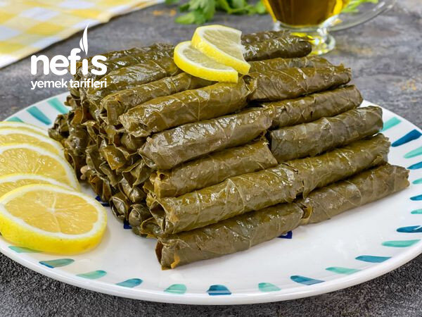

Malzemeler
- Asma yaprağı
- 4 adet büyük boy soğan
- Yarım çay bardağı sıvı yağ
- 1 yemek kaşığı domates salçası
- 1 yemek kaşığı biber salçası
- 2 su bardağı pirinç
- 1 tatlı kaşığı nane
- 1 çay kaşığı pul biber
- Yarım çay kaşığı karabiber
- Yarım çay kaşığı kimyon
- 2 adet küp şeker
- 2 yemek kaşığı nar ekşisi
- 1 tatlı kaşığı limon suyu
- 1 tatlı kaşığı tuz
Üzerine:
- 1 çay bardağı zeytin yağı
Hazırlanışı
- Sarmamızın en önemli özelliklerinden biri bol soğanlı olması ve soğanın iyice kavrulması.
- Soğanları küp küp doğrayıp sıvı yağda iyice pembeleşene kadar kavuruyoruz.
- Daha sonra salçalarını ekleyip kavurmaya devam ediyoruz.
- Pirincini baharatlarını şekerini tuzunu ekleyip 5 dakika daha kavurup altını kapatıp nar ekşisi ve limon suyunu ekliyoruz.
- Asma yapraklarının saplarını koparıp ince ince iç harcımız bitene kadar sarıyoruz.
- Tencerenin dibine bir kaç tane asma yaprağı serip üzerine sarmalarımızı diziyoruz.
- Sarmaların üzerine gelecek kadar kaynar su ekleyip üzerine bir tabak koyup tencerenin kapağını kapatıyoruz.
- 5 dk kadar yüksek ateşte kaynatıp sonrasında en kısık ateşe alıp suyunu çekip içleri pişene kadar pişiriyoruz.
- Bu aşamada suyu az gelip hala pişmemiş olurlarsa üzerine azar azar kaynar su ekleyebilirsiniz.
- İçleri piştiyse,piştikten sonra altını kaoatıp,1 çay bardağı sıvı yağı üzerine gezdirin.Sarmanız yemeye hazırdır,afiyet olsun 😋
